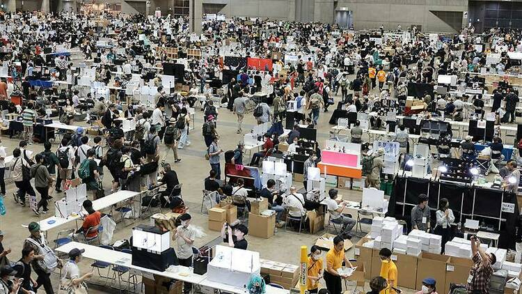

Sourcing


Basic Info
Garage kits can be purchased online and during in-person events. Typically, kits are sold in limited amounts in both instances and in varying quantities, depending on the sculptor (creator of the kit).
To acquire kits from Japan, you will need to have a proxy or forwarding service. A proxy service is a service that will purchase an item for you from an area or country you wouldn't have access to. Typically, you'll only need the link of the item you want to purchase and the proxy will handle the rest. A forwarding service is different in that the forwarder will not purchase the item for you, but instead provide a Japanese address that you can purchase items to.
An online proxy service I recommend is Doorzo, which has a New User Guide here. Similarly, a trusted forwarding service is Blackship, with a connected guide here.
Online Purchasing
There are many ways to acquire a kit online: Tonamo, BOOTH.pm, and secondhand markets.
Tonamo is a 2-day figure festival event, with the 2nd day being online sales hosted on BOOTH.pm. While you can technically use a proxy service here, I would highly recommend using a forwarding service to secure your kits faster, as sales are time limited and have limited stock.
BOOTH.pm is an online hobby marketplace, similar to Amazon where many sellers (even outside of garage kits) sell their goods. Sculptors will have their own storefronts and list their kits for sale on here.
There are multiple secondhand marketplaces that you can browse garage kits on: Mercari, Yahoo Auctions, and Mandarake.
Mercari and Yahoo Auctions are both secondhand sites, meaning that you are not buying from the sculptors directly like you would from Tonamo or BOOTH. Mandarake is a chain of secondhand stores that also sells online. They also ship worldwide, which means you won't need any proxy/forwarding service!
You can also look for garage kits on Mercari US (our version of Mercari, excluding Japan listings) or Ebay!

In-Person Events
There are 2 major figure festivals: Wonder Festival and Tonamo. To present a garage kit at either event, the sculptor must attain a license for the IP they want to create a garage kit of. The licensing is usually very strict with how many they can sell and are only allowed to sell on the day of the event.
Wonder Festival is held biannually in winter and summer of each year. Kits presented at this festival usually don't have online sales, unless the kit is presented again at a different event.
Tonamo's 1st day is held in-person. Unlike Wonder Festival, Tonamo offers online sales as well, which is much better for us international folk!
In both cases, traditional proxy services such as Doorzo cannot attend these events to purchase for you, and you would either have to attend yourself or hire an in-person shopper to attend the event.